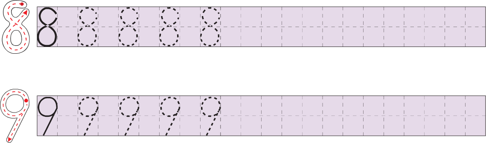
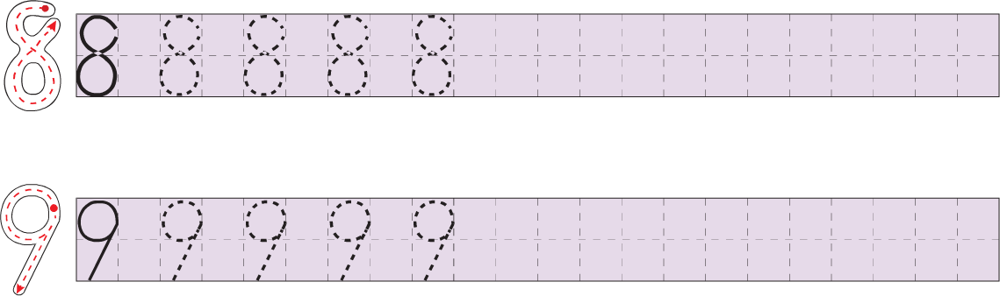

西文字母手写体范本
编者按：本网页收集了拉丁字母、希腊字母和基里尔字母的现代手写体范本（还附有阿拉伯数字手写体范本），着重反映了同种文字在不同地域、不同语言中的书写习惯。“范本”的选择标准是：字形普通，适合日常书写；受到官方认可，进入基础教育，或者在民间广泛流传。
拉丁字母
中国
圆体行书
圆体行书，又称圆体、草体，英语称为cursive writing。《汉语拼音方案》公布时，提倡使用的手写体就是简化圆体字（“简化”是相对于圆形花体字而言的），见《汉语拼音字母书写法》，《文字改革》1958年2月号，第44—45页。
（资料来源：《汉语拼音字母书写法》，《文字改革》1958年2月号，第44—45页。）
斜体行书
斜体行书，英语称为italic writing。20世纪60年代开始，中国教育界有人提倡用斜体行书来书写汉语拼音和英文。斜体行书的写法详见：《斜体行书（上）》，《文字改革》1962年第7期，第21—22页；《斜体行书（下）》，《文字改革》1962年第8期，第21—22页；《汉语拼音字母习字帖（斜体行书）》，北京：文字改革出版社，1962年；《英语习字帖（斜体行书）》，北京：人民教育出版社，1980年（初版编印于1964年）。

（资料来源：L. M. L.：《汉语拼音字母斜体行书基础练习》，《文字改革》1962年第11期，第26页。）

（资料来源：《英语习字帖（斜体行书）》，北京：人民教育出版社，1980年，第3页。）
备考 当代中国英语课本上的字母写法

（资料来源：江苏省张家港市中兴小学：《字母的书写》，人民教育出版社课程教材研究所，2008年9月18日，
直体楷书（资料暂缺）
直体楷书，又称印刷手写体，英语称为print-script。见《汉语拼音字母习字帖·第一种（直体楷书）》，北京：文字改革出版社，1959年。
美国（资料暂缺）
法国
法国国民教育部2013年公布了用于学校教学的两种行书手写体范本，分别称为“手写体A
历史上，法国常用的手写体是法式圆体（écriture ronde française）。参见法语维基百科Écriture ronde条目。
手写体A
手写体A属于圆体行书，分为大写字母不连写、大写字母连写两种版本，又各自分为正体、斜体两种。这里仅展示正体。
ABCDEFGHIJKLMN OPQRSTUVWXYZ abcdefghijklmnopqrstuvwxyz ÆŒÇÀÈÙÉÂÊÎÔÛÄËÏÜÖŸÑ æœçàèùéâêîôûäëüÿñ 0123456789€$£ ,.:;…_/@(){}[]|-–—!?&*‹›«»'"‘’“” #°+−±=≠×<>≤≥⁄%‰
A B C D E F G H I J K L M N O P Q R S T U V W X Y Z Æ Œ Ç À È Ù É Â Ê Î Ô Û Ä Ë Ï Ü Ö Ÿ Ñ
手写体B
手写体B属于斜体行书（指italic writing，不一定是“斜”的），分为大写字母不连写、大写字母连写两种版本，又各自分为正体、斜体两种。这里仅展示正体。
ABCDEFGHIJKLMN OPQRSTUVWXYZ abcdefghijklmnopqrstuvwxyz ÆŒÇÀÈÙÉÂÊÎÔÛÄËÏÜÖŸÑ æœçàèùéâêîôûäëüÿñ 0123456789€$£ ,.:;…_/@(){}[]|-–—!?&*‹›«»'"‘’“” #°+−±=≠×<>≤≥⁄%‰
A B C D E F G H I J K L M N O P Q R S T U V W X Y Z Æ Œ Ç À È Ù É Â Ê Î Ô Û Ä Ë Ï Ü Ö Ÿ Ñ
法式圆体

德国（资料暂缺）
希腊字母
［美国］Michael A. Covington的希腊字母写法

（资料来源：Michael A. Covington：A Few Notes about Fountain Pens，Covington Innovations，November 23, 2009，
基里尔字母
俄文字母手写体
（资料来源：人民教育出版社课程教材研究所俄语课程教材研究开发中心、俄罗斯国立普希金俄语学院编著：义务教育教科书《俄语》七年级全一册，北京：人民教育出版社，2012年。）
А Б В Г Д Е Ё Ж З И Й К Л М Н О П Р С Т У Ф Х Ц Ч Ш Щ Э Ю Я а б в г д е ё ж з и й к л м н о п р с т у ф х ц ч ш щ ъ ы ь э ю я
备考 其他版本的俄文字母手写体
（资料来源：Леонида Некина：Прописи с частой косой линейкой для первоклашек и дошкольников по русскому, украинскому и белорусскому языкам，Образовательный проект Леонида Некина，10.08.2018，

（资料来源：birdy geimfyglið：File:Russian Cursive Cyrillic.svg，维基共享资源，2008年10月9日，
附录 阿拉伯数字
中国：小学课本上的数字写法

 


（资料来源：人民教育出版社课程教材研究所数学课程教材研究开发中心编著：义务教育教科书《数学》一年级上册，北京：人民教育出版社，2012年，第30页、第16页、第40页、第51页、第17页。）
中国：会计工作用标准阿拉伯数字写法
（资料来源：中国人民银行总行核算工厂联行科：《书写阿拉伯数码要规范化》，《中国金融》1982年第17期，第39页。）
（编辑： ）
）
注 释
- 这里使用了字体“Écriture A romain ligne”，来自法国国民教育部（le ministère de l’éducation nationale），采用CC BY-ND进行许可。
- 这里使用了字体“Écriture A romain orné ligne”，来自法国国民教育部（le ministère de l’éducation nationale），采用CC BY-ND进行许可。
- 这里使用了字体“Écriture B romain ligne”，来自法国国民教育部（le ministère de l’éducation nationale），采用CC BY-ND进行许可。
- 这里使用了字体“Écriture B romain orné ligne”，来自法国国民教育部（le ministère de l’éducation nationale），采用CC BY-ND进行许可。
- 这里使用的字体来自LaTeX包frcursive（采用LPPL 1.2进行许可），其中大写字母的装饰笔画偏长一些。
- 这里使用了字体“UKIJ Elipbe (Bold)”，来自ئۇيغۇر كومپيۇتېر ئىلىمى جەمئىيىتى فونتلىرى，采用GNU LGPL和OFL进行许可。
- 这份资料中俄文字母“б”的写法似乎不够典型。
参 见
- 蒋澈：为什么中国小学英语和拼音要学两套不同的手写体，且“拼音字母”反而更接近外国人写的英文？——蒋澈的回答，知乎，2016年2月18日，
https://www.zhihu.com/question/40499106/answer/86919564。 - Richor：《Merry Christmas到底有几种字体？》，3type（微信公众号），2019年12月9日，
https://mp.weixin.qq.com/s/WAuMPCxA_ucxVArUY58aVw。